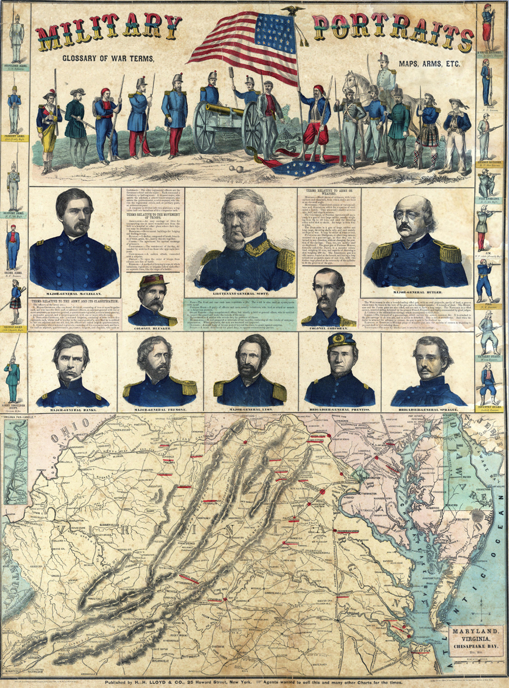

H.H. Lloyd & Co.'s Military Portraits
(1861)

One of the many maps and charts published by H.H. Lloyd & Co. for the Northern public.
This one was a primer on the Northern military--terminology, uniforms, key leaders, etc.
The men featured here were the most important members of the Union military establishment
at the start of the Civil War, though only a few of them would ultimately play an
important role in determining the war's outcome. Winfield Scott designed the Union's
overall strategic plan (the "Anaconda Plan") before being forced to retire in late 1861 by old age, ill health,
and poor relations with Congress. Nathaniel P. Banks and and John W. Sprague both
served with distinction, primarily in the Western theater, with the latter receiving the
Congressional Medal of Honor. McClellan and Frémont got a strong start to their Civil War
careers, but overstepped their bounds and fell out of favor with the Lincoln
administration in 1862. Benjamin Prentiss and Benjamin F. Butler were largely
ineffectual as commanders, and were not given important assignments in the second half of
the war. Blenker, Corcoran, and Lyon were all killed in action--Lyon, in fact, was the first
general to be killed in the Civil War.
Note: Click on the image for a larger version.
Source: David Rumsey Historical Map Collection
|

{kind=link}